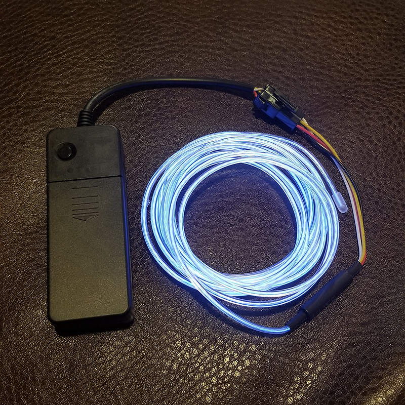
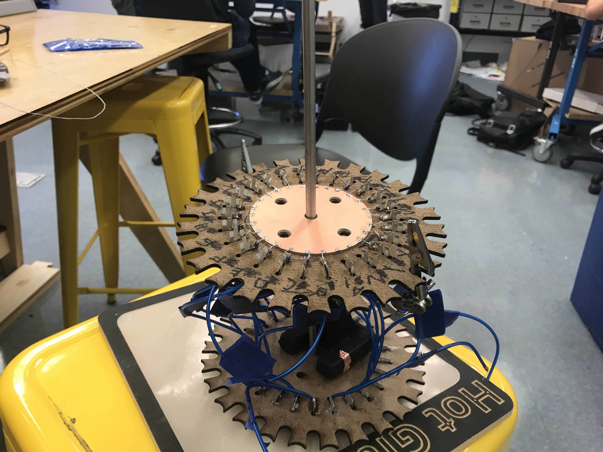
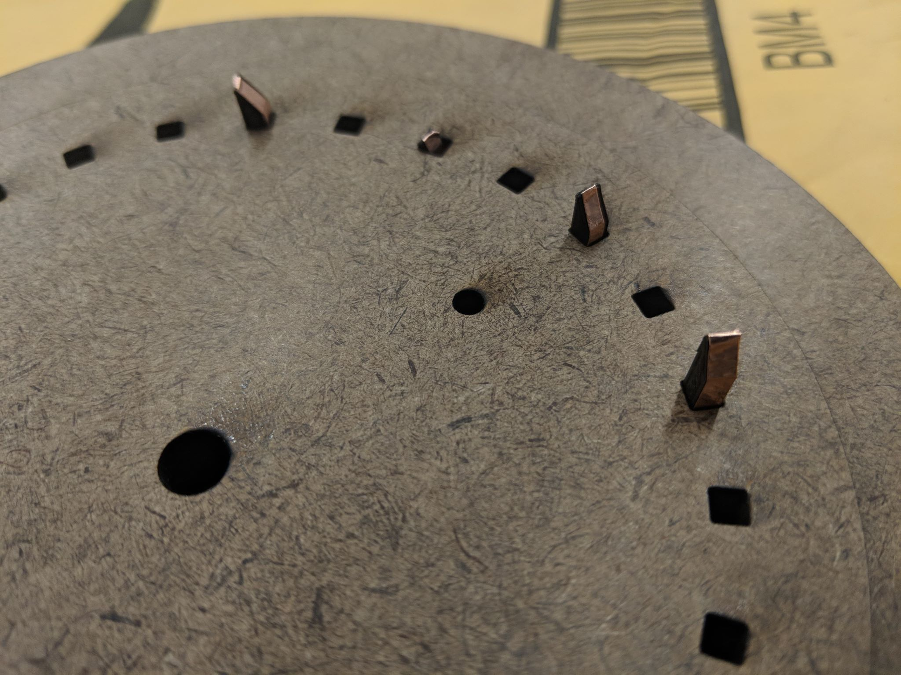
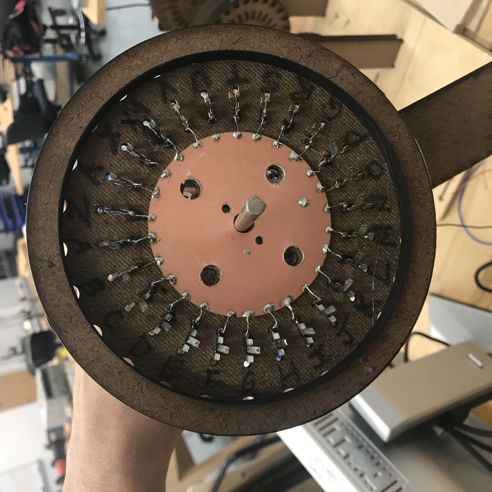
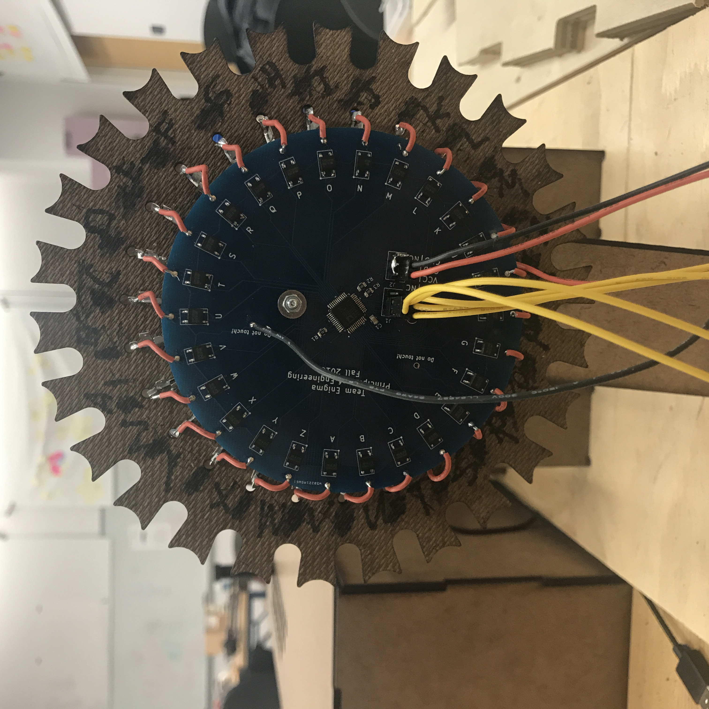
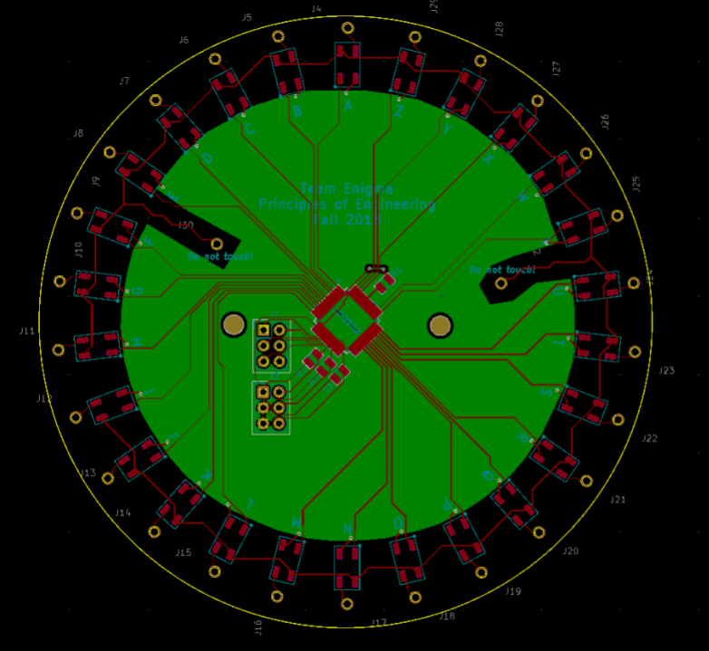
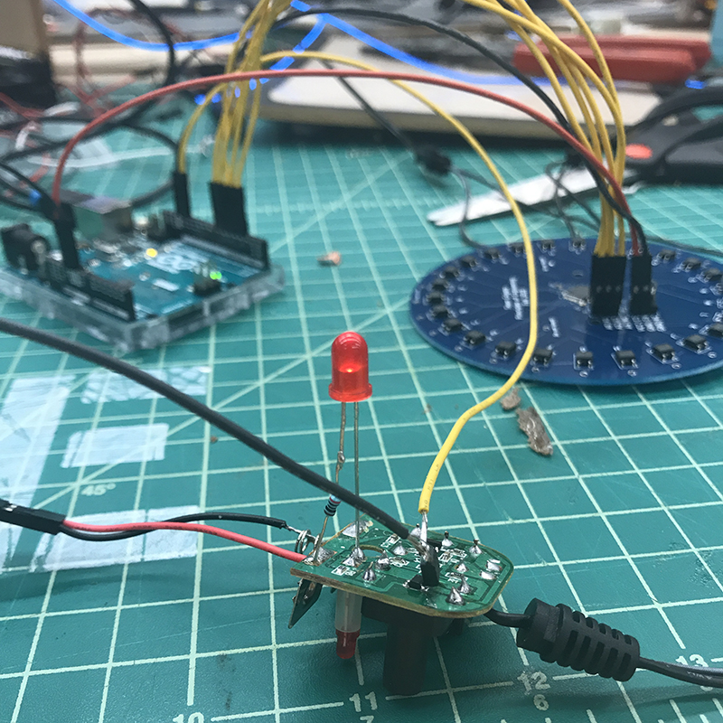
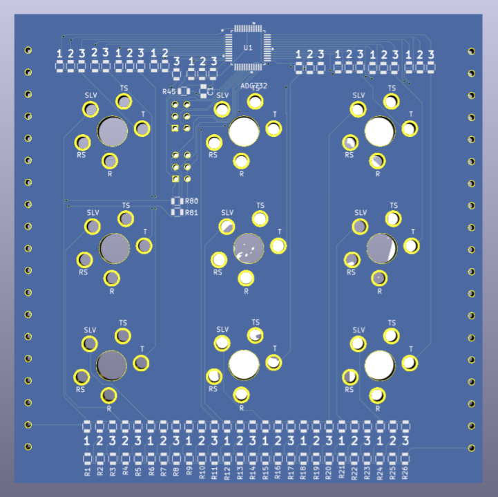
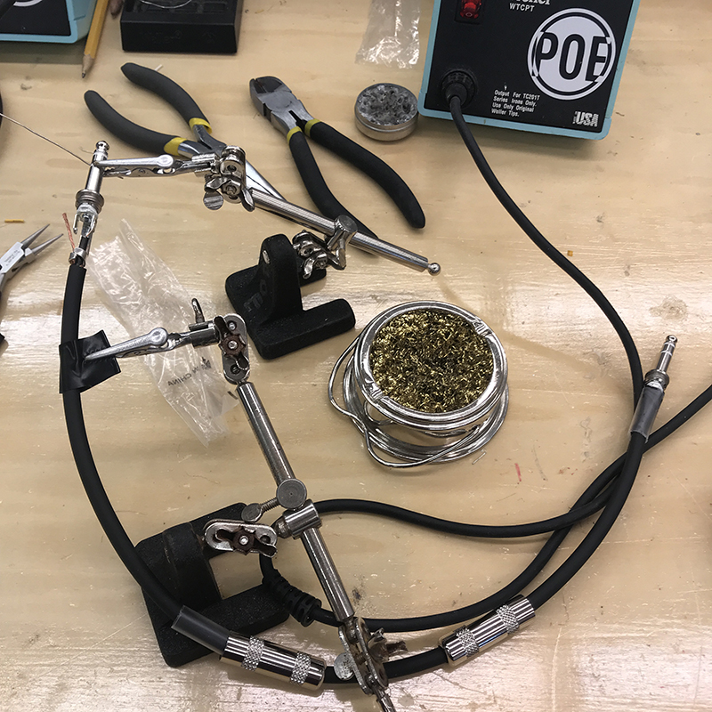

{kind=link}
Step 1
The first step is to strip off the outermost rubber coating.
At the center of our visualization, the electrical subsystem drives the project.
The block diagram for our system:
In the Enigma machine, after a letter was pressed an electrical signal was sent through a series of rotors. Each of these rotors took in one letter’s signal and remapped it to a random letter before passing the signal to the next rotor. In order to represent this letter remapping within each rotor we decided to use Electroluminescent (El) wire. El wire is a stiff wire core coated with phosphor and covered with a PVC sheath that glows blue when an AC voltage is applied to it.  Our challenge was to find a way to pass that AC signal through 4 rotors that can rotate independently of each other; because it is AC we had to be able to pass 2 separate connections between the rotors, what we refer to as the “hot” inner core and the “neutral” outer strands. We will discuss in a later section how we controlled these hot and neutral signals using the included battery pack.
In order to pass these 2 signals between the rotors, we needed to have a process to strip these wires and to prepare them to be soldered to electrical contacts. This ended up being a fairly involved and tedious process, but we were able to do it pretty efficiently by the end. (Mouse over photos for details!)
The first step is to strip off the outermost rubber coating.
The inner PVC coating is much more delicate. It needs to be cut and opened up very carefully in order to not damage the small neutral strands.
Once the PVC is opened the white inner core can be pulled out and to the side: this is the ‘hot’ signal.
We then used a knife blade or tweezers to pry the 2 ‘neutral’ strands. This part needs to be done carefully and practiced a few times because it is very easy to break them.
The neutral strands are then folded down and wrapped in copper tape. We added some solder to make sure the connection between them was good. Now we could solder contacts to the copper tape to pass the neutral connection.
The last step before the wire can be fully soldered is to scrape the phosphor off of the white, inner wire. It doesn’t need to be completely cleaned, just enough to be able to tin one side.
We set up our rotating rotors in between stationary links, hoping to reduce the mechanical complexity that would come with having two rotating surfaces making contact with each other. In order for us to be able to power the El wire within the rotors we needed to design a way to pass the hot and neutral signals from a rotor, through a link, and into the next rotor. Each rotor and link also had to be able to pass signals through both sides.
In order to pass a connection between a rotor and a link we decided to put slots in the rotor and mount three prong battery clips in these slots. As the rotor turned, these prongs would stick out and brush against the contacts we put in the links. By putting a hole right underneath the slots, we were able to connect the neutral lines of the wires directly to the contacts by soldering them to the copper tape we wrapped around the wires earlier.

In order to simplify our design and improve the reliability of our connections we were able to solder all of the hot wires to a single PCB plate mounted to the middle of the rotor. This allowed us to constantly pass the hot AC signal through all of the wires at once by energizing the first rotor’s plate.
 We needed a way to pass the neutral signal coming from the battery clips through each link; we also wanted to find a way to minimize the resistance that the links would put up against the rotors rotation. To solve this we 3D printed pieces to stick through the links, on both sides, that are angled to allow the battery clips to brush and bend over them, so that they would be able to slide past while still making solid contact. These pieces by themselves are obviously not conductive, so we wrapped them in copper tape so that their entire surfaces could pass the signal through to the next rotor.
 In order to pass the hot connection from the PCB plates through the links we simply mounted a spring on the face of each link, close to the center of the rotor, so that it would be compressed by the plates. We drilled a hole in the links and soldered a wire to each spring to connect them and pass the hot signal through the link.
 The EL wire is powered by ~150V at around 30mA in order for it to light up properly which means we can’t power them using an Arduino. Instead we decided to hook up the inverter that comes with the EL wire and find a way to selectively route a power to one of the 26 letters or power lines. To do that we designed a board that mounts on the first link (tower) that interfaces the rotor with the arduino. This board houses a 1-32 bi-directional MUX (ADG732BSUZ-REELCT-ND) that we use to power one of the 26 photovoltatic optoisolated relays. The reason we used an optoisolated relay was to isolate the AC voltage powering the EL wire from the 5V DC that powers the arduino. We specced one that would fit within our design constraints and landed on a CPC1025N.
 The powerboard is pretty straightforward in terms of design. We use a 1-32 MUX to select which of the 26 relays to close the EL wire circuit with that turns on the letter we’d like. A few things we had to keep an eye out was the distance between the high voltage and low voltage traces. For that I used [insert regulation here] in order to get the correct spacing. Since I was dealing with 5V digital lines I had the luxury of having a little fun with the traces. In order to power the right letter was easy as a single line of code thanks to AVR’s register manipulation.
for(int i = 0;i < 26;i++){
PORTD &= 0b00000111; //reset pins
PORTD |= (i - 1) << 3 ;//turn on letter at mux address i
} Luckily each pack of EL wire came with its own inverter that took the voltage from two AA batteries (~3.3V) and boosts it up to the propper spec. So instead of reinventing the wheel and coming up with our own booster we saved some time but just soldering a spare photovoltatic optoisolated relay from the power board that allows us to power the EL wire using an Arduino. This ensured we would only have the MUX on when we needed so as not to burn out the inverter.
The plugboard was a part of the Enigma machine that was the first and last step of the encryption process. It would flip a letter on its way out of the keyboard and flip a letter again on it after to the lightboard after its adventure through the rotors. We chose ¼” jacks to try to mimic the connectors they had on the original enigma since the connectors they used are no longer produced.
 For the plugboard we developed a circuit that would allow us to accurately find which letters have been switched in order to add that into the Rasb-Pi driven encryption process. We setup a chain of resistors and placed letters along it so that each letter would have its unique voltage associated with it and read it using a MUX interfaced with the Arduino.
 For the circuit to work we had to put together all of the cables in house and make some modifications along the way. Each jack on the board has a pin that goes to the MUX and another that goes to the resistor line. When creating our own cable we flipped the two lines so that we could reach the voltage from the jack that the cable is connected to.
{kind=link}
{kind=link}
{kind=link}
{kind=link}
{kind=link}